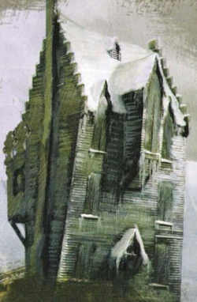
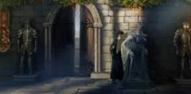
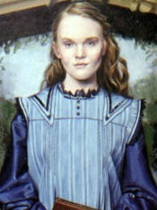

ALDEIA HOGSMEADE
A aldeia de Hosmeade foi fundada por Hengisto de Woodcroft, quando esse procurava um lugar para se esconder dos trouxas. Hogsmeade também fez história ao ter sido utilizada como quartel general da Revolta dos Duendes de 1612 (segundo o livro Sítios Históricos da Bruxaria). Possui, através de suas largas ruas, lojas de todos os tipos e gostos mágicos. vilarejo de aparencia acolhedora, conhecida por suas muitas lojas, bares e docerias, muito conhecidos entre funcionarios e alunos da Escola de magia e bruxaria de Hogwarts
HOGSMEADE - A ORIGEM
CURIOSIDADES
- Inteiramente bruxo
- Como ela é
- Hogsmeade e Hogwarts
- Feitiço proteção
- Visitas
- Passagens Secretas
- Salgueiro Lutador para Casa dos Gritos: 
- Estátua da Bruxa de um olho corcunda: 
- Sala Precisa para o 2° andar do Cabeça de Javali: 
- Espelho
A aldeia de Hogsmeade, ou simplesmente chamada de Hogsmeade é o único vilarejo completamente bruxo da Grã-Bretanha
Hogsmeade é uma pitoresca aldeia de chalés e lojas com velas encantadas decorando as árvores durante o Natal. Fica também perto da estação de trem usada pelo Expresso de Hogwarts.
Hogsmeade foi fundada na mesma época que a Escola de Magia e Bruxaria de Hogwarts, pelo bruxo medieval Hengist de Woodcroft enquanto ele fugia da perseguição dos trouxas, se tornando assim um refúgio para bruxos que procuram uma vida tranquila sem receio de usar a magia
A Cidade possui feitiços de proteção contra trouxas Por exemplo, se Trouxas olhassem para Hogwarts, tudo o que eles veriam seria uma ruína com placas dizendo para manter distância. Alguns lugares mágicos são totalmente segregados do mundo Trouxa – o Beco Diagonal sendo particularmente acessível através de uma série de portais entre os dois
Os alunos às vezes têm permissão para visitar a aldeia em excursões nos fins de semana, mas somente alunos de terceiro ano e acima com permissão do guardião podem fazer a visita. Os alunos costumam frequentar a Rua Principal da aldeia, que abriga lojas e pubs famosos, como o Três Vassouras e a Dedosdemel. Ou então preferem observar a Casa dos Gritos.
O mapa do Maroto revela 7 passagens secretas que levam de Hogwarts para Hogsmeade,
Essa passagem foi construida quando Remo Lupin entrou em Hogwarts, para ele ir até a casa dos gritos sem ninguém ver quando se transformava em lobisomem. Para paralisar o Salgueiro Lutador deve-se apertar uma raiz, que é um "botão".
Essa passagem leva à loja Dedosdemel, para entrar, basta dizer Dissedium e apontar a varinha para a bruxa. Filch não conhece a passagem, e é a melhor para Hogsmead, pois é bem guardada e não é perigosa. Harry usou muito para ir à Hogsmead sem ter permissão. A bruxa fica no meio do corredor do 3° andar.
Essa passagem está dentro da sala precisa, por isso é necessário entrar na sala e ela deve estar na forma certa. A passagem leva ao quadro de Ariana Dumbledore, em cima da lareira do 2° andar do Cabeça de Javali. Usada por Neville Longbotton para transportar Harry Rony e Hermione para Hogwarts, em As Reliquias da Morte. É sem dúvida a passagem mais segura e bem escondida, mas tem dificil acesso e não é mostrada no mapa do maroto.
Há uma passagem atrás de um espelho no 4°andar, que Fred e George usavam muito, mas desmoronou no inverno de 1992. Não se sabe aonde ela saía, mas era em Hogsmead. Era uma escadaria.
Existem mais 4 passagens secretas que levam à Hogsmead, não se sabe quais são, mas Filch as vigia constantemente, então, não são recomendaveis